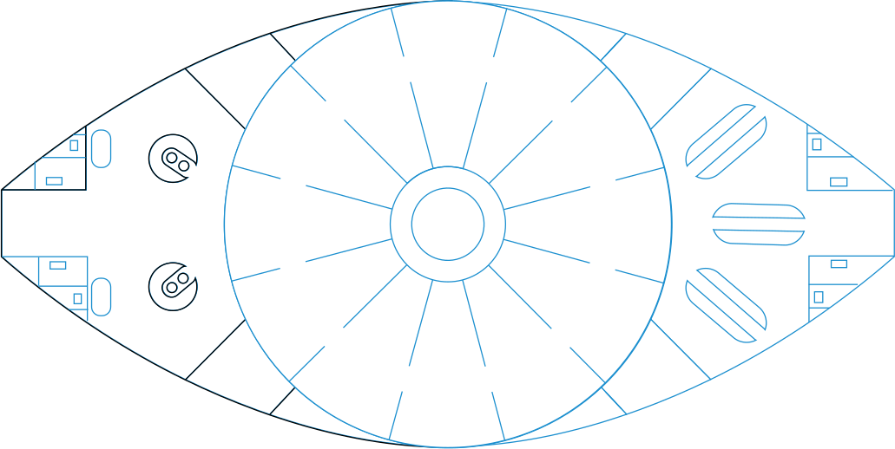
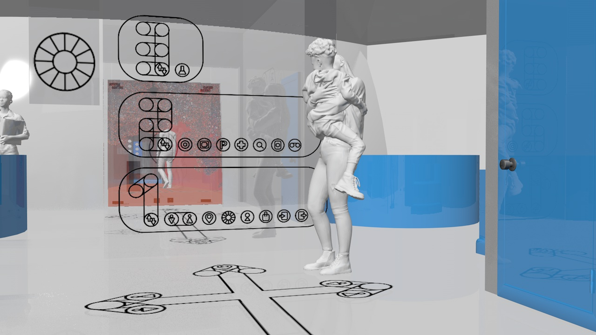
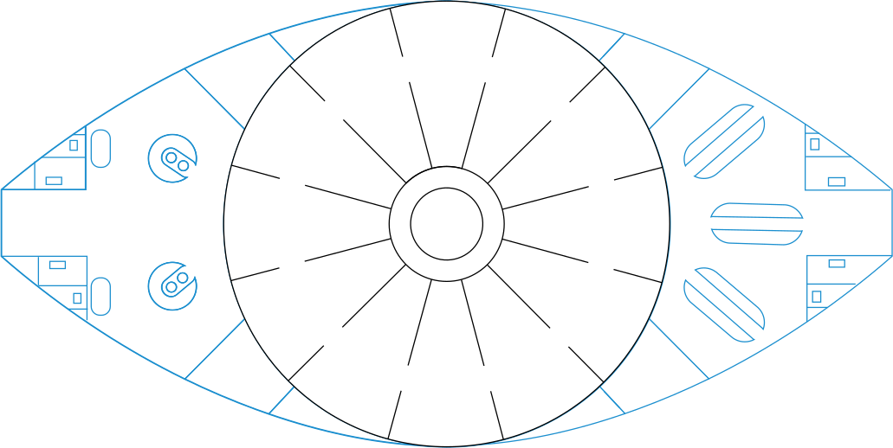
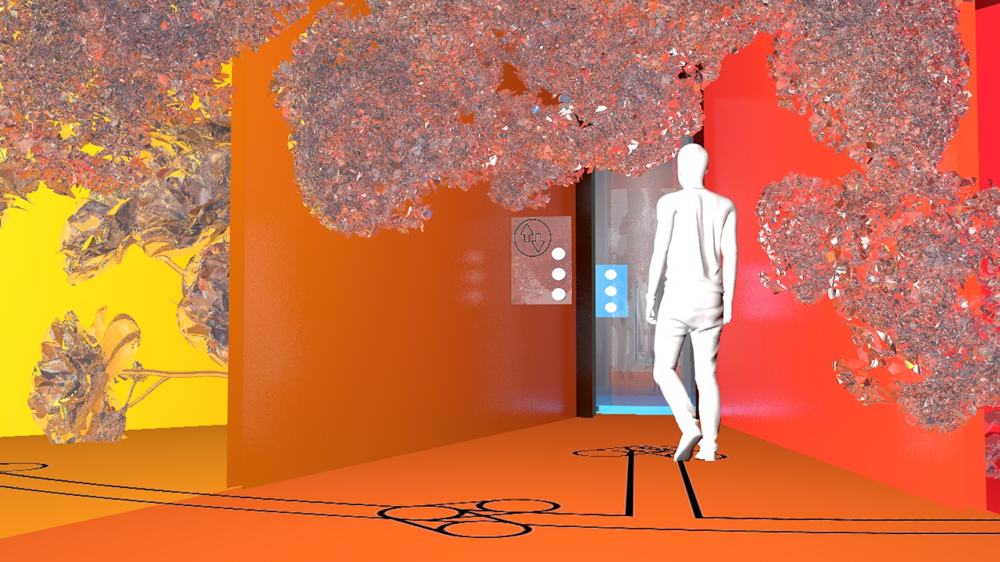
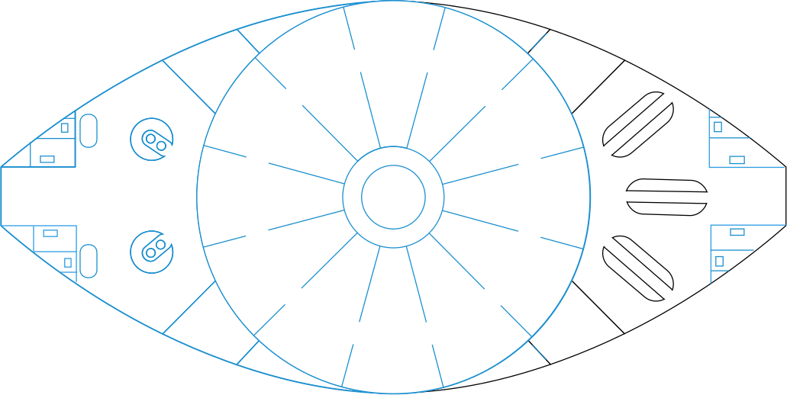
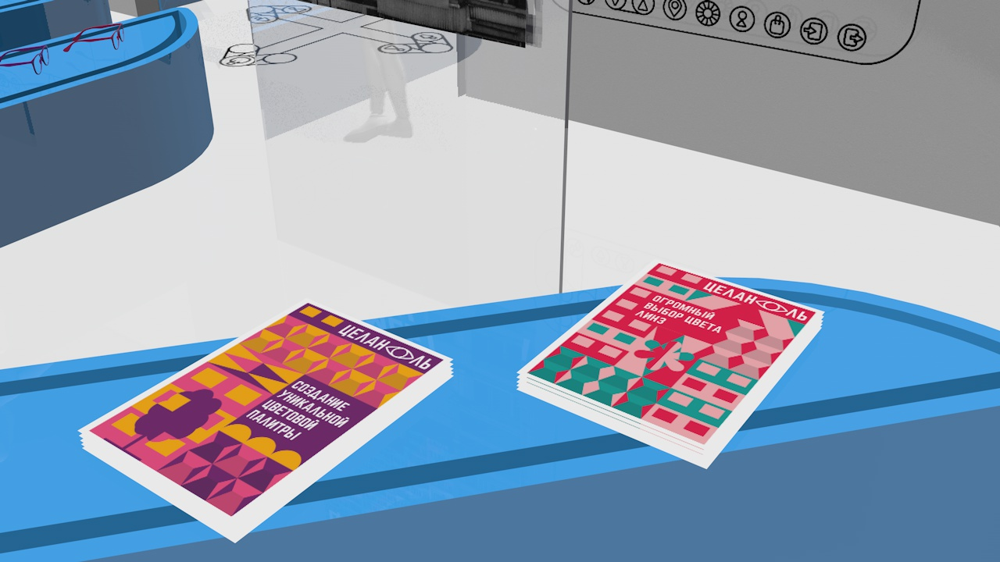
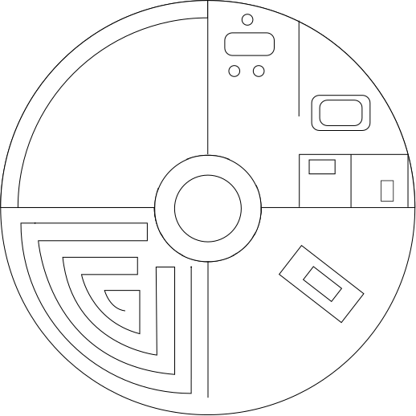
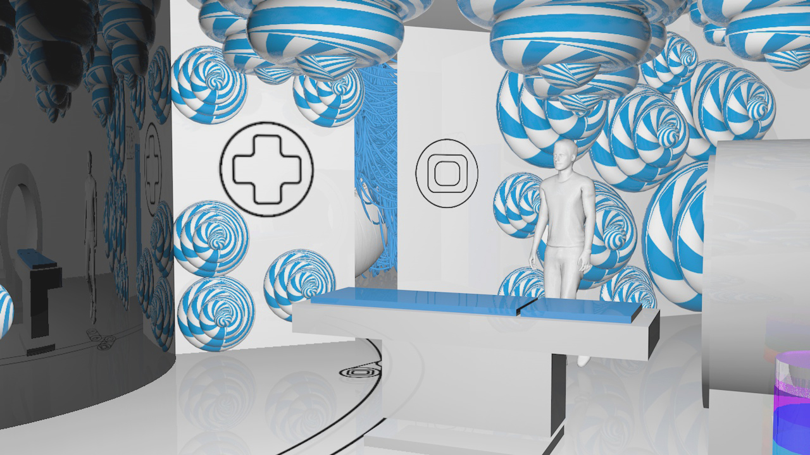
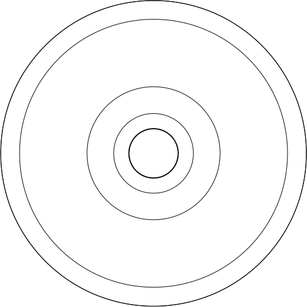
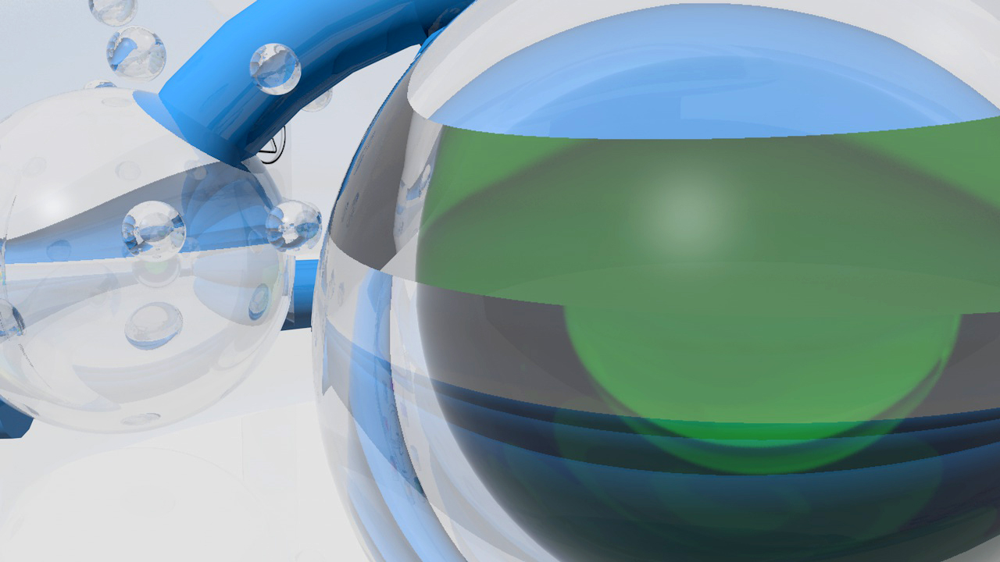

ПОЖАЛУЙСТА, ПЕРЕВЕРНИТЕ ЭКРАН
РЕСЕПШН
На входе по указателям вы сразу же сможете найти
и попасть в уборную. Пройдя немного вперед, вы наткнетесь
на стойки регистрации. Там вам выдадут все необходимое,
а также подскажут, куда вам идти. Ресепшн оборудован
диванчиками, так что, если внезапно образуется очередь,
вам будет, где комфортно подождать.
Равным образом, вы сможете с легкостью найти карту
здания. Точно такую же карту вы найдете в магазине.
Она демонстрирует, что именно находится на каждом этаже.
Расшифровки иконок вы найдете в данной книжке, которую,
при желании вы сможете приобрести на стойках регистра –
ции. Но покупать книжку не обязательно.


ЦВЕТОВОЙ КРУГ
В каждой комнате, находится небольшой хрустальный сад.
Благодаря уникальному строению объектов, они преломляют
свет таким образом, что обойдя весь цветовой круг, мы
увидим весь возможный спектр цветов. Этого эффекта
сейчас нельзя добиться иным способом. На разработку
данного строения у нас ушло три года очень плотной,
коллективной работы.
На выходе мы получили объекты, способные создавать
максимально широкую дисперсию света. Это помогло нам
улучшить наш продукт и создавать уникальный.


МАГАЗИН
Здесь представлен наш полный ассортимент, который
постоянно обновляется. Из постоянных элиментов:
стандартные оправы для очков, кейсы и жидкость
для линз, очечники и буклеты. Здесь же наши сотрудники
по полученному у врача направлению выдадут вам линзы
и подготовят очки. Также именно в магазине вы сможете
заказать подарок или сертификат. Если вы приходите
за линзами не в первый раз, вам нужно оставить заявку
на нашем сайте или по телефону, и вам выдадут заказ
имеено здесь.


ИССЛЕДОВАНИЯ
На втором этаже находятся четыре комнаты, которые пред –
назначены для проведения заключительных четырех фаз
цветового исследования. В первой комнате проверяется
зрение в привычном понимании. Однако, к нему добавляется
исследование качества зрения в зависимости от оттенка.
Во второй комнате мы проверяем вас на дальтонизм
при помощи только двух цветов: красного и зеленого.
Третий кабинет представляет из себя большой аппарат
МРТ, который подсчитывает, какого количества атомов
цвета не достает в нас. Всего проверятеся семь цветов.
В четвертом кабинете находится главный компьютер.


ЛАБОРАТОРИЯ
Поднявшись на третий этаж, вы сразу же увидите указатель
с иконкой пробирки. Это означает, что вы попали в нашу
лабораторию. Пройдя по кругу, вы увидете все шесть
работающих аппаратов. Количество аппаратов равно
количесву этапов создания наших линз/стекол. Первый
этап: создание основы. В лаборатории беспрерывно
работает аппарат, перемешивающий жидкость, из которой
получается чудо. Работники лаборатории периодически
пополняют ее. Из первого аппаратам по трубам,
при команде, жидкость поступает во второй.

